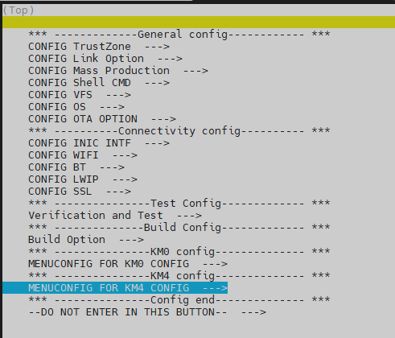
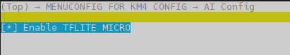

Introduction
TensorFlow Lite for Microcontrollers is an open-source library, it is a port of TensorFlow Lite designed to run machine learning models on DSPs, microcontrollers and other devices with limited memory.
Ameba-tflite-micro is a version of the TensorFlow Lite Micro library for Realtek Ameba SoCs with platform specific optimizations, and is available in ameba-rtos.
Links:
Supported Realtek Ameba SoCs
OS |
Chip |
Processor |
|---|---|---|
FreeRTOS |
RTL8730E |
CA32 |
RTL8713EC,RTL8726EA |
HiFi5 DSP |
|
RTL8710EC,RTL8713EC,RTL8720EA,RTL8726EA |
KM4 |
|
RTL8721Dx,RTL8711Dx |
KM4 |
Build Tensorflow Lite Micro Library
KM4
To build Tensorflow Lite Micro Library, enable tflite_micro configuration in SDK menuconfig.
Switch to gcc project directory
cd {SDK}/amebadplus_gcc_project ./menuconfig.py
Choose Kernel KM4

Choose AI config

Enable tflite_micro

{kind=link}
{kind=link}
Build Examples
KM4
TensorFlow Lite for Microcontrollers related examples are in the {SDK}/component/example/tflite_micro directory. To build an example image such as tflm_hello_world:
./build.py -a tflm_hello_world
Tutorial
MNIST
Introduction
The MNIST database (Modified National Institute of Standards and Technology database) is a large collection of handwritten digits. In this tutorial, MNIST database is used to show a full workflow from training a model to deploying it and run inference on Ameba SoCs with tflite-micro.
Example codes are in the {SDK}/component/example/tflite_micro/tflm_mnist directory.
Note
Step 1-4 are for preparing necessary files on a development machine (server or PC etc.). You can skip them and use prepared files to build the image.
Step 1. Train a Model
First train and evaluate a classification model for 10 digits of MNIST dataset. You can choose either keras(tensorflow) or pytorch framework by running python keras_train_eval.py --output keras_mnist_conv or python torch_train_eval.py --output torch_mnist_conv.
A simple convolution based model will be trained for several epochs and then accuracy will be tested.
Due to the limited computation resources and memory of microcontrollers, we recommend paying attention to model size and operation numbers.
Use keras_flops library under tensorflow/keras framework:
from keras_flops import get_flops model.summary() flops = get_flops(model, batch_size=1)
Use ptflops library under pytorch framework:
from ptflops import get_model_complexity_info macs, params = get_model_complexity_info(model, (1,28,28), as_strings=False)
After training, keras model is saved in SavedModel format. Pytorch model is saved in .pt format, while a .onnx file is also exported for later conversion stage.
Step 2. Convert to Tflite
In this stage, post-training integer quantization is applied on the trained model and output .tflite format. Float model inference is also supported on Ameba SoCs, however, we recommend using integer quantization which can extremely reduce computation and memory with little performance degradation.
For models trained by keras(tensorflow), run
python convert.py --input-path keras_mnist_conv/saved_model --output-path keras_mnist_conv
For models trained by pytorch, run
python convert.py --input-path torch_mnist_conv/model.onnx --output-path torch_mnist_conv
An additional step will run to convert from .onnx to SavedModel format.
Then tf.lite.TFLiteConverter is used to convert SavedModel into int8 .tflite given a representative dataset:
converter = tf.lite.TFLiteConverter.from_saved_model(saved_model_dir)
converter.optimizations = [tf.lite.Optimize.DEFAULT]
converter.representative_dataset = repr_dataset
converter.target_spec.supported_ops = [tf.lite.OpsSet.TFLITE_BUILTINS_INT8]
converter.inference_input_type = tf.int8
converter.inference_output_type = tf.int8
tflite_int8_model = converter.convert()
Refer to tflite official site for more details about integer-only quantization.
After conversion, the performance on test set will be validated using int8 .tflite model and two .npy files containing input array and label array of 100 test images are generated for later use on SoC.
In convert.py, onnx_tf library is used for converting from onnx to SavedModel. Other convert libraries are available with similar purpose:
Step 3. Optimize Tflite and Convert to C++
Use tflm_model_transforms tool from official tflite-micro repository can reduce .tflite size by running some TFLM specific transformations. It also re-align the tflite flatbuffer via the C++ flatbuffer api which can speed up inference on some Ameba platforms. This step is optional, but we strongly recommend running it:
git clone https://github.com/tensorflow/tflite-micro.git cd tflite-micro bazel build tensorflow/lite/micro/tools:tflm_model_transforms bazel-bin/tensorflow/lite/micro/tools/tflm_model_transforms --input_model_path=</path/to/my_model.tflite> # output will be located at: /path/to/my_model_tflm_optimized.tflite
Convert .tflite model and .npy test data to .cc and .h files for deployment:
python generate_cc_arrays.py models int8_tflm_optimized.tflite python generate_cc_arrays.py testdata input_int8.npy input_int8.npy label_int8.npy label_int8.npy
Step 4. Inference on SoC with Tflite-Micro
example_tflm_mnist.cc shows how to run inference with the trained model on test data, calculate accuracy, profile memory and latency.
Use netron to visualize the .tflite file and check the operations used by the model. Instantiate operations resolver to register and access the operations.
using MnistOpResolver = tflite::MicroMutableOpResolver<4>;
TfLiteStatus RegisterOps(MnistOpResolver& op_resolver) {
TF_LITE_ENSURE_STATUS(op_resolver.AddFullyConnected());
TF_LITE_ENSURE_STATUS(op_resolver.AddConv2D());
TF_LITE_ENSURE_STATUS(op_resolver.AddMaxPool2D());
TF_LITE_ENSURE_STATUS(op_resolver.AddReshape());
return kTfLiteOk;
}
Refer to tflite-micro official site for more details about running inference with tflite-micro.
Step 5. Build Example
Follow steps in Build Tensorflow Lite Micro Library and Build Examples to build the example image.